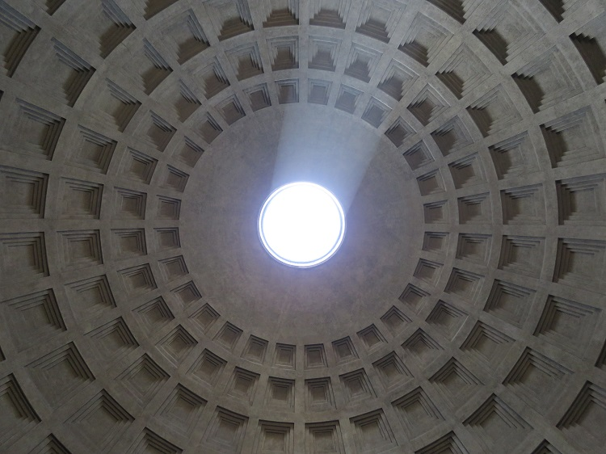

I'm currently working on an planet tracker application. One of the functionalities I want to implement is zoomable 3d maps of any object in the folar system that has been mapped. When I started looking for these resources, I found them very scattered. It seems there is no cohesive collection of planetary image data, so on this page I am gathering the highest resolution surface texture maps along with other data, such as bump and normal maps, and models of objects that aren't relatively spherical. If anyone finds higher quality resources than the ones I have listed, please contact me so I can update them! bslaght@u.rochester.edu
Title
